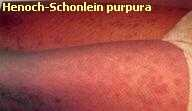
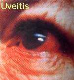
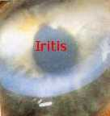

DIVERSITY OF IC-MEDIATED DISORDERS
The list of IC mediated diseases is very long. The soluble IC may be produced in bloodstream (if Ig and Ag simultaneously present in blood plasma). In this case IC mediated multi-local or systemic vasculitis will appear.
Another situation is constructed if Ag is fixed within the tissues, and Ig circulates in bloodstream. This will cause bi-directional counter-diffusion and IC is formed in the zone of equivalent concentrations. The biological or clinical manifestation would be Arthus phenomenon (reaction). In some disorders both types of IC formation occur, sometimes in combination with other allergic (allergoid) reactions (cytotoxic, anaphylactoid, delayed type hypersensitivity).
IC vasculitis contributes into pathogenesis of all diffuse and some focal forms of glomerulonephritis (except minimal change disease or lipoid nephrosis), although in many cases and forms it is combined with other immunopathological mechanisms (cytotoxic – in crescentic rapidly progressing glomerulonephritis, anaphylactic – in acute diffuse glomerulonephritis, delayed hypersensitivity – in some proliferative forms of glomerulonephritis and in nephropathy of pregnancy). It has major importance in the pathogenesis of rheumatoid arthritis, many manifestations of systemic lupus erythematosus, periarteriitis nodosa, polymyositis, systemic sclerosis, Sjogren’s syndrome, mixed diseases of connective tissue with non-organospecific autoantibodies, Reuter’s syndrome (urethritis, sacroileitis, conjunctivitis) and in ankylosing spondilitis.

It has been recognized as essential component of pathogenesis in allergic skin vasculitides, psoriasis, Schonlein – Henoch’ purpura (in combination with cytotoxic mechanisms), Takayasu’s arteritis and cryoglobulinemia. IC mechanism takes part in course of all infections, proceeding with viremia, parasitemia and bacteriemia, or complicated by persistent autoimmune response. These are: infective endocarditis, lepra, syphilis, acute and chronic protozoal diseases, tropical fevers, acute shistosomiasis, chronic hepatitis, mycoplasmosis and virtually all infectious vasculitides. The interplay of infectious and IC factors is a corollary of acute diffuse proliferative post-streptococcal glomerulonephritis and main link of rheumatic fever mechanism. IC mechanism and autoallergy against shared epitopes of neural tissue, provoked by germs, intermingle in pathogenesis of demyelinizing polyneuropathies, including Guillen-Barr’ syndrome, lateral amyotrophic sclerosis, subacute sclerotic panencephalitis and, probably, also multiple sclerosis.

IC process is observed in dermatology (blistering diseases – dermatitis herpetiformis, pemphigus and bullous pemphigoid), in ophthalmology (uveitis, iridocyclitis, retinitis, conjunctivitis), in gastroenterology (ulcerative colitis and Krohn’s disease, celiakia) and in endocrinology (Hashimoto’s thyroiditis, insulin dependent diabetes mellitus and its chronic complications). In all this disorders IC mediated mechanism is not a single instrument of disease, but plays additive role (in combination with other mechanisms). Sometimes it contributes into certain facets or links of disorder, or it is responsible for some complications in persons, predisposed to delay of IC clearance. For instance, immune complexes with participation of non-enzymatically glycated blood plasma and vascular wall proteins serve as main factors of systemic microangiopathy mechanism. Sometimes insulin, especially xenogenous one, also is revealed within these IC. IC mediated microangiopathy is promoted by hyperglycemia episodes and may cause the development of glomerulosclerosis, retinopathy, polyneuropathy and diencephalic disorders in advanced IDDM patients. With the same quality of treatment and level of compensation, microangiopathy progresses more rapidly in persons, predisposed to IC disorders. The secondary IC mediated process may accompany lymphoid leukemia and lymphomas, as well as lung cancer or skin melanomas. IC vasculitis is major element of pathogenesis in early phase of serum sickness and in penicillamine poisoning. The excessive fixation of IC on blood cells may cause thrombocytopenia, leukopenia and even hemolytic anemia with extravascular hemolysis and splenomegaly.NEXT CHAPTER
OR